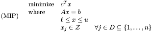
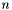
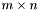
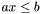
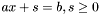
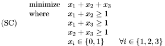
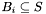

where and are

-vectors, is an
matrix, is an -vector, and is the set of integers. Though in principle all input data are reals, for practical solution on a computer they are rational. Frequently the entries of , , and are integers. We can convert an inequality constraint to an equality by adding a variable to represent slack between the value of and its bound . For example, a constraint of the form
becomes
. If all variables are integer variables, this is a (pure) integer program (IP). If none are integer, this is a linear program (LP). The objective can be a maximization if that is the more natural optimization direction.The only nonlinearity in MILP is the integrality constraints. These give MILP its enormous practical modeling power, but they are also responsible for MILP's theoretical difficulty and its practical difficulty, especially for large problems. Integer variables can represent discrete decisions. For example, binary variables (those for which and are the only possible values) can represent yes/no decisions: a company must either build a factory or not build it; one cannot half-build a factory at half the cost to achieve half the benefit. MILP can effectively model resource allocation problems such as scheduling, inventory planning, facility location, or general budget allocation. Therefore, they are a workhorse technology for human decision support and operations research.
Current general-purpose MILP solvers compute (approximately) optimal solutions by intelligent search based on branch-and-bound and branch-and-cut. There are a number of parallel MILP solvers, none of them commercial. SYMPHONY and COIN/BCP are designed for small-scale, distributed-memory systems such as clusters. BLIS under development, is designed as a more scalable version of SYMPHONY and BCP. It will be part of the optimization software available through COIN-OR (Computational Infrastructure for Operations Research once it is available. FATCOP is designed for grid systems. The grid offers vast computational resources, but it's not a suitable ``platform'' for sensitive computations such as those involving national security or company proprietary information. The parallel branch-and-bound search strategy in PICO is particularly well-suited for solving MILPs on tightly-coupled massively-parallel distributed-memory architectures, such as those available at the National Laboratories.

SC is a simple example of a set-cover application, with three sets.
There are two ways to launch the PICO MILP solver: (1) from within the AMPL modelling interface and (2) directly from within a Unix shell command line. These two options are described in the following two sections.
# # File SC.mod # var x1 binary; var x2 binary; var x3 binary; minimize obj: x1 + x2 + x3; subject to c1: x1 + x2 >= 1; subject to c2: x1 + x3 >= 1; subject to c3: x2 + x3 >= 1; end;
$ ampl ampl: model SC.mod; ampl: option solver PICO; ampl: solve; PICO Solver Library 1.0: Final Solution: Value = 2 Subproblems ----------- Created 3 100.0% Started Bounding 2 66.7% Bounded 2 66.7% Started Splitting 1 33.3% Split 1 33.3% Dead 0 0.0% Search Time: 0.0 seconds Total Time: 0.0 seconds gss: return code 0; final f = 2 ampl: exit;
$ setenv solver PICO $ ampl ampl: model SC.mod; ampl: solve; PICO Solver Library 1.0: Final Solution: Value = 2 Subproblems ----------- Created 3 100.0% Started Bounding 2 66.7% Bounded 2 66.7% Started Splitting 1 33.3% Split 1 33.3% Dead 0 0.0% Search Time: 0.0 seconds Total Time: 0.0 seconds gss: return code 0; final f = 2 ampl: exit;
Finally, we note that the formulation in SC.mod can be generalized to more fully exploit the capability of the AMPL modelling language. The goal of the set cover problem is to find a minimal subset such that the set intersects with each of a given collection of subsets of ,

. We can formulate this more general set cover formulation in AMPL as follows:
#
# File GeneralSC.mod
#
set S; # The original set
param n >= 1; # The set of the collection of substs;
set B{1..n} within S; # The collection of subsets of S
var x{S} binary; # Binary variables that denote the covering set
minimize obj: # The objective
sum {i in S} x[i];
subject to cover {j in 1..n}: # The covering constraint
sum {i in B[j]} x[i] >= 1;
end;
# # GeneralSC.dat # set S := X1 X2 X3; param n := 3; set B[1] := X1 X2; set B[2] := X1 X3; set B[3] := X2 X3;
$ setenv solver PICO $ ampl ampl: model GeneralSC.mod; ampl: data GeneralSC.dat; ampl: solve; PICO Solver Library 1.0: Final Solution: Value = 2 Subproblems ----------- Created 3 100.0% Started Bounding 2 66.7% Bounded 2 66.7% Started Splitting 1 33.3% Split 1 33.3% Dead 0 0.0% Search Time: 0.0 seconds Total Time: 0.0 seconds gss: return code 0; final f = 2 ampl: exit
Three different file formats are supported when running PICO directly:
The commandline syntax for executing PICO with these input formats is
PICO {--parameter=value ...} <MPS-file>
PICO {--parameter=value ...} <LP-file>
PICO {--parameter=value ...} <AMPL-model-file> <AMPL-data-file>
The GNU MathProg format closely resembles the format of the AMPL modelling language. Significant differences are that MathProg does not support nonlinear expressions (e.g. functions like log), and its parser can be picky about the existence of white space around tokens in an expression. In the case of SC, the MathProg format exactly matches the AMPL format, so we can directly apply PICO as follows:
PICO SC.mod
NAME SC
ROWS
G R0001
G R0002
G R0003
N R0004
COLUMNS
INT1 'MARKER' 'INTORG'
C0001 R0001 1
C0001 R0002 1
C0001 R0004 1
C0002 R0001 1
C0002 R0003 1
C0002 R0004 1
C0003 R0002 1
C0003 R0003 1
C0003 R0004 1
INT1END 'MARKER' 'INTEND'
RHS
B R0001 1
B R0002 1
B R0003 1
BOUNDS
UP BOUND C0001 1
UP BOUND C0002 1
UP BOUND C0003 1
ENDATA
PICO SC.mod
minimize
obj: x1 + x2 + x3
s.t.
c1: x1 + x2 > 1
c2: x1 + x3 > 1
c3: x2 + x3 > 1
int
x1 x2 x3
end
PICO SC.lp